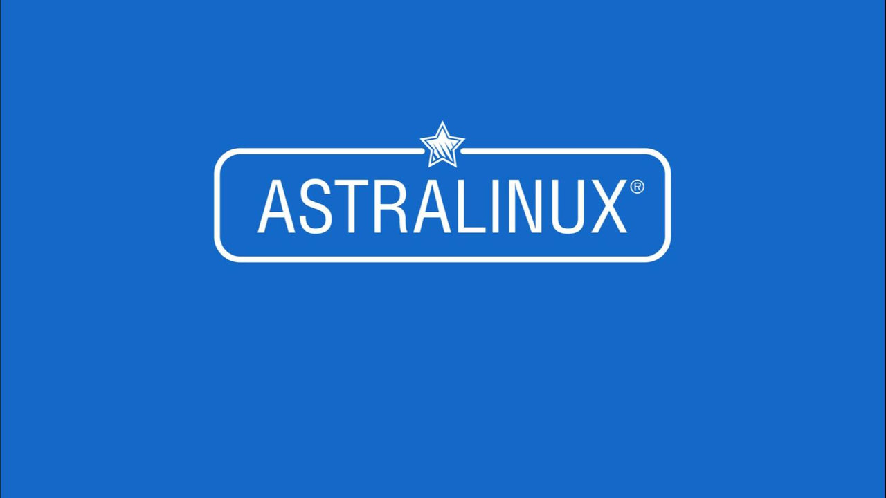

Региональная медицинская информационная система (РМИС) Обучение медицинского персонала

Обучение Astra Linux
О центре
Учебный центр «RED Fox» — идеальное решение для специалистов, желающих повысить свой профессионализм и
уровень компьютерной грамотности. Учебный центр оснащен инновационными материалами, а также
компетентными преподавателями, что позволяет достичь выдающихся результатов за оптимальные сроки.
Система обучения строится на основе комплексного учебного плана, состоящего из теоретического курса и
серии практических занятий. Предлагаемые вниманию обучающихся курсы охватывают многие аспекты работы в
сфере информационных технологий — от начального владения компьютером в совершенно разных операционных
системах до администрирования сетей со сложной архитектурой. Образовательные программы учебного центра
ориентированы на ускоренное освоение актуальных, востребованных знаний, навыков и компетенций в сфере
информационных технологий.
Наши преподаватели обладают обширными знаниями о методах работы. Их высокий уровень подготовки
достигается благодаря налаженному, активному и непрерывному процессу обмена опытом и взаимодействию
между сотрудниками глобальной сети учебных центров.
Мы с радостью готовы помочь Вам овладеть всеми нюансами в области IT-технологий. Наши
высококвалифицированные специалисты разъяснят все тонкости, уловки и хитрости работы с информацией.
Если Вы хотите саморазвиваться, самореализоваться в условиях стремительной трансформации и идти в ногу
со временем, мы ждём именно Вас!
Уважаемые друзья, совсем скоро в нашем учебном центре стартует обучение по курсу «Региональная медицинская информационная система». Не упустите прекрасную возможность исследовать для себя новую и востребованную сферу!
Курсы
Курс 1
КОМПЬЮТЕРНАЯ ГРАМОТНОСТЬ
Курс будет интересен пользователям, желающим начать освоение компьютерной техники или
стремящимся развивать имеющиеся навыки в данной сфере
Курс 2
ГОСУДАРСТВЕННЫЕ ПОРТАЛЫ
Курс будет интересен пользователям, которые только начинают работать с государственными
порталами, сайтами, веб-приложениями в повседневной, образовательной, профессиональной
деятельности
Курс 3
ASTRA LINUX ДЛЯ ПОЛЬЗОВАТЕЛЕЙ. ALSE-1601
Курс предназначен для пользователей ОС Linux. Будет полезен тем пользователям, кто только
начал работать с ОС Linux или кто переходит с Windows на Linux
Курс 4
АДМИНИСТРИРОВАНИЕ ОС ASTRA LINUX SPECIAL EDITION. ALSE-1602
Курс будет интересен начинающим системным администраторам или тем, кто только планирует
попробовать себя в этой профессии
Курс 5
РАСШИРЕННОЕ АДМИНИСТРИРОВАНИЕ ОС ASTRA LINUX SPECIAL EDITION. ALSE-1603
Курс будет интересен системным администраторам, как начинающим, так и тем, кто планирует
переход на Astra Linux с других Linux-подобных систем
Курс 6
СЕТЕВОЕ АДМИНИСТРИРОВАНИЕ ОС ASTRA LINUX SPECIAL EDITION. ALSE-1604
Курс будет интересен администраторам сети, как начинающим, так и тем, кто планирует перевод
серверов на Astra Linux c других ОС
Курс 7
ASTRA LINUX SPECIAL EDITION. СПЕЦИАЛЬНЫЙ КУРС. ALSE-1605
Курс будет интересен администраторам безопасности, системным администраторам, которым
требуется обеспечить комплексную безопасность сетевой инфраструктуры
Курс 8
АДМИНИСТРИРОВАНИЕ СИСТЕМЫ РЕЗЕРВНОГО КОПИРОВАНИЯ RUBACKUP. RB-1901
Курс будет интересен ИТ-специалистам, занимающимся вопросами централизованного резервирования
и восстановления данных
Курс 9
КИБЕРГИГИЕНА
Курс будет интересен пользователям, которые хотят обезопасить своё рабочее место от
случайных или преднамеренных атак, взломов и утечки информации
Курс 10
РЕГИОНАЛЬНАЯ МЕДИЦИНСКАЯ ИНФОРМАЦИОННАЯ СИСТЕМА (РМИС)
Курс будет интересен сотрудникам сферы здравоохранения, работающим в РМИС или планирующим
начать в ней работу
Программы обучения
КУРС 1. КОМПЬЮТЕРНАЯ ГРАМОТНОСТЬ
Для кого этот курс: Курс будет интересен пользователям, желающим начать освоение
компьютерной техники или стремящимся развивать имеющиеся навыки в данной сфере
Предварительная подготовка: Не требуется
Формат курса: очно, заочно с применением дистанционных образовательных технологий
Продолжительность курса: 10 дней / 36 ак.ч.
Результат обучения: по завершению курса слушатель будет знать:
правила безопасной работы с ЭВМ;
анатомию персонального компьютера;
принципы работы компьютера и основы работы с операционными системами;
способы ввода и вывода информации;
настройку рабочего стола с учетом различных условий и потребностей;
основные операции и возможности работы с офисными программами;
файловые операции;
процесс работы с папками;
порядок работы с внешними носителями информации;
информационные возможности сети Интернет;
сущность онлайн-платформ и алгоритм работы в них.
5000 ₽
Стоимость обучения
Модуль 1. Вводный урок
1.1. Типы компьютерной техники и специфика работы с каждым из них.
Состав мыши и расположение кнопок: датчик перемещения, кнопки и дополнительные детали управления
(колесо прокрутки, джойстик, потенциометр, трекбол, клавиши);
Приемы работы с мышью: наведение указателя, щелчок, двойной щелчок, правый щелчок,
перетаскивание, протягивание, специальное перетаскивание;
Тренажеры для компьютерной мыши: поймай меня, хвост, NK navoloky, мышиный тренажер, aspekt 1.01
(wmouse).
При помощи комбинаций Ctrl+С, Ctrl+V скопировать и вставить текст;
При помощи комбинации Ctrl+S сохранит текст;
Перетащить с помощью мыши скопированный текст на вторую страницу.
Текст -
Лето – прекрасная пора. Олег и Дима очень любили это время года, так как начинались долгожданные
каникулы. Они играли и веселились целый день; купались в речке, которая находилась неподалеку от их
деревни. По субботам они вдвоем ходили на пикник, и иногда брали с собой удочки, чтобы поймать
огромную рыбу. Каждый вечер они приходили навещать соседа деда Ивана, который им рассказывал истории
своей молодости.
Режимы в калькуляторе и основные операции в них: простой, расширенный, финансовый, программный,
клавиатурный;
Панель инструментов программы.
5.5. Звукозапись.
Теория:
Понятие «звукозапись»;
Операции в программе «звукозапись»: создание аудиофайла, редактирование аудиофайла, наложение
эффектов на аудиозапись, вставка фрагмента в другие документы, сохранение аудиофайла;
Панель инструментов программы;
Настройка параметров звукозаписи.
Практическая работа:
Создать документ в текстовом редакторе «блокнот», набрать текст и распечатать;
Текст
Не верить императору Константину глупо. В описываемую эпоху Византия переживала далеко не лучшие
времена, и событие такого масштаба, как приобщение к истинной вере северных варваров, бесперечь
тревоживших рубежи империи, просто не могло остаться без комментариев.
Создать документ в текстовом редакторе «wordpad», форматирование (цвет — красный, размер шрифта
— 16, шрифт — Arial), сохранение документа и шаблонирование;
Текст
Конечно же, эта невозможность происходит не от того, что философы не обладают достаточными талантами
и навыками, а от того, что в неразрешимости и состоит специфика философских вопросов и проблем. Если
на какой-то вопрос в принципе нельзя найти ответ, он признается философским.
Создать документ в графическом редакторе «paint» (дом/смайл/небо) и сохранить копию документа;
Создать аудиофайл в программе «звукозапись» .
Модуль 6. Навыки работы с файловой системой
6.1. Создание файла.
Теория:
Понятие «файл»;
Способы создания файла: контекстное меню, пуск (верхнее меню окна).
6.2. Сохранение файла.
Теория:
Способы сохранения файла: меню, клавиатурная комбинация Ctrl+S, панель инструментов;
Типы ссылок: естественные, вечные и арендованные, статейные, контекстные, новостные, баннерные,
ссылки с объявлений;
Инструкция по работе с ссылками.
Практическая работа:
Подключить компьютер, используя проводное подключение/подключениечерез USB-модем/подключение
через Wi-Fi;
Выбрать и установить один из следующих браузеров: яндекс, google chrome, mozilla firefox, opera;
Найти в поисковой строке следующую информацию: «лидирующая команда в чемпионате мира по
футболу», «услуги компании "RED Fox"», «знаменитые цитаты Аристотеля», «местоположение
Рейнланд-Пфальц», «рецепт сувлаки»;
Найти сайт компании «Астра Линукс» и скопировать ссылку.
Модуль 10. Интернет-площадки
10.1. Электронная почта.
Теория:
Понятие «электронная почта»;
Интерфейс интернет-площадки;
Возможности интернет-площадки;
Инструкция по созданию почтового ящика;
Инструкция по созданию сообщений и работе с электронной почтой.
Инструкция по созданию страницы вконтакте, одноклассники, instagram;
Инструкция по работе в instagram, вконтакте, одноклассники.
10.3. Skype.
Теория:
Понятие «skype»;
Возможности skype;
Интерфейс skype;
Инструкция по созданию страницы в skype;
Инструкция по работе в skype
Практическая работа:
Создать почтовый ящик в электронной почте;
Создать текстовое письмо в электронной почте и отправить его;
Создать письмо с прикрепленными вложениями;
Выбрать одну из перечисленных социальных сетей и создать страницу: вконтакте, одноклассники,
instagram;
Заполнить профиль выбранной социальной сети (фото, текст о себе), отправить текстовое и
голосовое сообщения;
Создать страницу в skype, заполнить профиль, оправить текстовое, голосовое сообщения и совершить
видеозвонок.
КУРС 2. ГОСУДАРСТВЕННЫЕ ПОРТАЛЫ
Для кого этот курс: Курс будет интересен пользователям, которые только начинают
работать с государственными порталами, сайтами, веб-приложениями в повседневной,
образовательной, профессиональной деятельности или же тем, кто намерен совершенствовать уже
имеющиеся компетенции в данной области.
Предварительная подготовка: Не требуется
Формат курса: очно, заочно с применением дистанционных образовательных
технологий
Продолжительность курса: 7 дней / 25 ак.ч..
Результат обучения: по завершению курса слушатель будет знать:
функционал государственных порталов, официальных сайтов, веб-приложений;
принципы работы наиболее распространенных государственных порталов, официальных сайтов,
веб-приложений;
инструкции по работе с интернет-магазинами;
практические навыки для работы с официальными сайтами, порталами, приложениями;
использование порталов, сайтов, приложений в учебной, профессиональной и повседневной
деятельности.
7000 ₽
Стоимость обучения
Модуль 1. Вводный урок
1.1. Понятие «государственный портал».
Теория:
Трактование понятия;
Этимология понятия.
1.2. Роль и функционал государственных порталов.
Теория:
Значение государственных порталов;
Применение государственных порталов: поиск информации, получение услуг, оплата услуг,
штрафов, госпошлин, подача заявлений, запись к специалистам, регистрация документов и т.д.
Виды учетной записи: упрощённая, стандартная, подтверждённая;
Способы регистрации на портале: пк, планшет, смартфон;
Способы подтверждения учетной записи: онлайн через банк, лично в центре обслуживания, с
помощью заказного письма, с помощью электронной подписи.
3.2. Личный кабинет.
Теория:
Вход в личный кабинет: номер телефона, электронная почта, электронная подпись, СНИЛС;
Заполнение профиля: основная информация, контакты, документы, информация о детях, данные
транспортных средств;
Изменение личных данных: с подтверждением ведомств, без подтверждения;
Информация в личном кабинете: заказанные услуги, обращения, платежи, статусы заявлений.
3.3. Функционал портала.
Теория:
Основные разделы: личные документы, здоровье, социальная поддержка, транспорт, финансы,
налоги, штрафы, семья, пенсия, образование, работа, бизнес, недвижимость, правопорядок,
культура и путешествия, оружие, охота, рыбалка, интернет и связь, прочее.
3.4. Услуги для предпринимателей и юридических лиц.
Теория:
Роли и права на просмотр, создание, настройку или редактирование данных: руководитель,
администратор, сотрудник без прав доступа, сотрудник с правом на создание черновиков;
Возможности ИП и юридических лиц на портале: упрощенная регистрация юридических лиц и
предпринимателей, подбор информации о недвижимом имуществе, уведомление Роспотребнадзора,
регистрация на портале бизнес-навигатора МСП, оплата налогов, налоговых задолженностей,
проверка контрагента, получение реквизитов ИФНС, предоставление списка аккредитованных
центров выдачи электронной печати, подача документов об уплате страховых взносов, подача
жалобы на решение контрольных органов, подтверждение вида деятельности в ФСС и т.д.
Услуги для физических лиц.
Теория:
Возможности физических лиц: регистрация брака, регистрация рождения ребенка, выплата
компенсации стоимости путевок в детский лагерь, запись в детский сад, получение или замена
паспорта гражданина РФ, загранпаспорта гражданина РФ, регистрации по месту жительства или
пребывания, регистрация транспортного средства, получение права на управление транспортным
средством, предоставление предварительных результатов ЕГЭ, подача заявления на поступление в
вуз, запись для прохождения профилактических медицинских осмотров, диспансеризации,
получение справки об отсутствии судимости, получение выписок из реестров лицензий и т.д.
Практическая работа:
Войти в личный кабинет, используя электронную почту;
Заполнить основную, а также дополнительную информацию в личном кабинете;
Подтвердить любым доступным способом свою учетную запись на портале;
Из списка возможных услуг выбрать две и воспользоваться ими;
В личном кабинете отследить статус получаемых услуг и отказаться от одной из них.
Модуль 4. Российский налоговый портал
4.1. Регистрация.
Теория:
Способы регистрации на портале: пк, планшет, смартфон;
Поля регистрации: e-mail, пароль, подтверждение пароля, фамилия, имя, политика
конфиденциальности.
4.2. Личный кабинет.
Теория:
Вход в личный кабинет: логин, электронная почта, одноклассники, vkontakte, facebook;
Заполнение профиля: основная информация, дополнительная информация;
Налоговый навигатор: налоги, бухгалтерский учет и аудит, налоговое право, страховые взносы,
налоговые проверки, регистрация, ликвидация организаций, изменение учредительных документов,
международное налогообложение, судебная защита, экономика, полезная информация для
налогоплательщика;
Дополнительные инструменты: онлайн-конференции, форум, семинары, каталог компаний,
справочники, клуб экспертов и т.д.
4.4. НДФЛ.
Теория:
Уплата налога: плательщики НДФЛ, сроки уплаты, порядок оплаты, последствия неуплаты;
Возврат налога: имущественный вычет, вычет на лечение, вычет на обучение, вычет на
благотворительность, вычет по взносам, пакет документов для возврата;
Основные разделы: онлайн кассы, УСН, ЕНВД, патент для ИП, НДС, налог на прибыль, расчет
зарплаты, пособия, страховые взносы, налоги для физических лиц.
Практическая работа:
Войти в личный кабинет, используя одноклассники/vkontakte/facebook;
Заполнить основную и дополнительную информацию в личном кабинете;
Используя налоговый навигатор, перейти в раздел «страховые взносы» и найти «по каким тарифам
производить оплату индивидуальным предпринимателям, адвокатам и нотариусам, лицам, которые
не производят выплаты физическим лицам?»;
Заполнить налоговую Декларацию 3-НДФЛ.
Модуль 5. Культура РФ
5.1. Регистрация.
Теория:
Способы регистрации на портале: пк, планшет, смартфон;
Подтверждение электронной почты.
5.2. Личный кабинет.
Теория:
Вход в личный кабинет: электронная почта, одноклассники, vkontakte, facebook, авторизация
через госуслуги;
Заполнение профиля: основная информация, дополнительная информация;
Ресурсы личного кабинета.
5.3. Основные разделы портала.
Теория:
Функционал сайта: афиша, трансляции, стриминговые площадки, кино, музеи, музыка, театр,
литература, традиции, архитектура, образование, образы России, спецпроекты.
5.4. Ресурсы портала.
Теория:
Услуги портала: бронирование и оплата билетов, онлайн-мероприятия, поиск учреждений, анонсы
предстоящих мероприятий и т.д.;
Порядок оплаты: банковская карта, кредитная карта, пушкинская карта.
Практическая работа:
Подтвердить адрес электронной почты;
Войти в учетную запись через госуслуги;
Заполнить основную, а также дополнительную информацию в личном кабинете;
Начать просмотр на стриминговой площадке «Балет Нуреева»;
Забронировать два билета на любое событие и отменить один из них.
Модуль 6. Портал правовой информации
6.1. Архитектура портала.
Теория:
Разделы: главная, новости, официальное опубликование правовых актов, законодательство РФ,
официальное издание «Собрание законодательства РФ», новые поступления, публичные центры
правовой информации, удостоверяющий центр ФСО России, обратная связь, архив, статьи,
методические рекомендации, карта портала.
Поиск по системе «Официальное опубликование правовых актов»;
Поиск по интегрированному банку «Законодательство России»;
Интеллектуальный поиск.
Практическая работа:
В разделе «Законодательство РФ» найти архив ведомости съезда народных депутатов РФ и
верховного совета РФ за 1993 г.;
Используя интеллектуальный поиск, найти ФЗ о валютном регулировании и валютном контроле;
Найти список публичных центров правовой информации в Краснодарской крае;
Найти документ по номеру публикования — 0001201906040026.
Модуль 7. Российский общеобразовательный портал
7.1. Архитектура портала.
Теория:
Разделы: новости, обзоры и аналитика, точка зрения, спецпроекты, дошкольники, школа,
егэ/гиа, олимпиады, колледж, учитель года, международный опыт, русский язык в мире,
образовательная среда, педагогическое образование.
7.2. Законодательство об образовании.
Теория:
Классификаторы: органы управления образованием, образовательные учреждения, самообразование,
организационно-правовые формы образовательных учреждений, плата и социальная защита
обучающихся и воспитанников, прием иностранных граждан на учебу в российские учебные
заведения, законодательство о научной деятельности и т.д.
7.3. Поиск информации.
Теория:
Поиск документа по классификатору;
Поиск документа по принявшему органу;
Поиск по виду документа;
Быстрый поиск;
Расширенный поиск.
Практическая работа:
Найти, используя поиск по классификатору, учреждения для детей-сирот и детей, оставшихся без
попечения родителей;
Найти, используя поиск по классификатору и по виду документа, учреждения дополнительного
образования;
Найти, используя поиск по классификатору, по виду документа и принявшему органу, письма
федеральной службы по надзору в сфере образования и науки за 2015-2021 гг.;
Изучить форму обратной связи.
Модуль 8. Сбербанк Онлайн
8.1. Регистрация.
Теория:
Способы регистрации: номер телефона+карта, логин, предоставленный банком;
Подтверждение учетной записи;
Восстановление доступа: мобильное приложение, оператор.
8.2. Личный кабинет.
Теория:
Вход в личный кабинет: логин+пароль, QR-код, биометрия, номер карты;
Настройка личного кабинета: уведомления от банка, государственные уведомления, безопасность,
оформление и звуки, главный экран и т.д.;
Ресурсы личного кабинета: кошелек, вклады и счета, безопасность, кредиты, цели, инвестиции,
пенсии, страхование, рекомендации, сервисы, офисы и банкоматы и т.д.
8.3. Опции банка.
Теория:
Операции, доступные пользователям: денежные переводы с лицевых счетов или вкладов на другие
счета, депозиты, вклады, карту, денежные переводы со своих счетов и депозитов на счета,
депозиты, вклады, карту другого клиента Сбербанка, платежи в бюджет и государственные
внебюджетные фонды, погашение кредита, оформление автоплатежа, оплата мобильного телефона,
ЖКХ, открытие, закрытие вклада или счёта и т.д.
8.4. СберСпасибо.
Теория:
Уровень привилегий: условия, возможности, переход на новый уровень;
Начисление бонусов Спасибо: порядок начисления, сроки, партнеры;
Трата бонусов: обмен на купоны, покупки за бонусы, мили и баллы путешественникам, возмещение
расходов на ЖКХ и налоги, возмещение части ежемесячного платежа по потребительскому кредиту
или ипотеке, перевод клиенту Сбербанка.
Практическая работа:
Зарегистрироваться с помощью любого из предложенных способов: номер телефона+карта, логин,
предоставленный банком;
Подтвердить свою учетную запись;
Войти в личный кабинет, используя логин+пароль и номер карты;
Определить свой уровень привилегий, партнеров, начисляющих бонусы в Твери, а также текущий
баланс.
Модуль 9. Почта России
9.1. Регистрация.
Теория:
Поля регистрации: мобильный телефон, электронная почта, пароль, пользовательское соглашение.
9.2. Личный кабинет.
Теория:
Вход в личный кабинет: электронная почта+пароль, авторизация через госуслуги;
Настройка личного кабинета: пользовательское соглашение, договор с Почтой России, интерфейс
и т.д.
9.3. Возможности и преимущества работы.
Теория:
Функционал портала для частных лиц: отправления писем или бандеролей, массовая отправка
посылок, вызов курьера, виды отправлений, список индексов, упрощенное получение отправлений,
поиск пропавших отправлений, выдача посылки другому человеку, почтовый перевод,оплата услуг
и т.д.;
Функционал портала для бизнеса: отправления по России, международная доставка посылок,
массовая отправка писем и счетов, заказные письма, фулфилмент, курьерская служба для
бизнеса, отделения для корпоративных клиентов, интеграция для отправки и отслеживания,
таргетированная почтовая рассылка, размещение рекламы в отделениях и т.д.;
Онлайн-сервисы: упрощенный экспорт, электронные заказные письма, электронный
документооборот, размещение изданий в подписном каталоге, подписка на газеты и журналы,
геопочта, аренда абонементного ящика, почта маркет, мобильное приложение и т.д.
Модуль 10. Роснефть
10.1. Регистрация
Теория:
Поля регистрации: электронная почта, логин, пароль, подтверждение пароля;
Требования к паролям.
10.2. Личный кабинет.
Теория:
Вход в личный кабинет: пароль, логин, восстановление пароля;
Настройка личного кабинета: язык, уведомления, изменение логина, пароля, электронной почты,
добавление карт и т.д.
10.3. Опции.
Теория:
Доступные операции: заключение договора, регистрация договора, регистрация данных, запись в
офис, определение местоположения АЗС, инструкции, поиск заявок, выявление текущих акций и
т.д.;
Условия заключения договора для физических лиц;
Условия заключения договора для юридических лиц.
Модуль 11. Интренет-магазины и приложения
11.1. Wildberries.
Теория:
Структура официального сайта;
Регистрация: официальный сайт, мобильное приложение;
Интеграция пк и мобильного приложения;
Личный кабинет: вход, интерфейс, возможности и принципы работы в нем и т.д.;
Операции с заказами: оформление, редактирование, подтверждение, способ доставки, оплата,
отслеживание, получение, отмена, возврат, повторение заказа, поиск текущего, отмененного,
доставленного заказа;
Регистрация: официальный сайт, мобильное приложение;
Личный кабинет: способы входа, личная информация пользователя, опции, нюансы работы и т.д.;
Операции с картами: активация, привязка, удаление;
Рассылка: получение, отказ.
11.4. Кошелек.
Теория:
Регистрация: пк, мобильное приложение;
Личный кабинет: вход, информация о пользователе, подтверждение номера телефона,подтверждение
электронной почты, интерфейс, функционал и т.д.;
Ресурсы приложения: получение кэшбэка, выпуск карты, привязка карты, подтверждение карты,
закрытие карты, начисление бонусов, списание бонусов, отслеживание баланса карт и т.д.;
Обращение в службу поддержки.
КУРС 3. ASTRA LINUX ДЛЯ ПОЛЬЗОВАТЕЛЕЙ ALSE-1601 (16 ЧАСОВ)
Для кого этот курс: Курс предназначен для пользователей ОС Linux. Будет полезен тем
пользователям, кто только начал работать с ОС Linux или кто переходит с Windows на Linux. Также,
курс заинтересует тех, кто переходит с другого дистрибутива Linux на ОС Astra Linux.
Предварительная подготовка: Начальные навыки работы на компьютере в любой операционной
системе.
Формат курса: очно или вебинар
Продолжительность курса: 2 дня / 16 ак.ч.
Результат обучения: по завершению курса слушатель будет знать:
понимать фундаментальные основы операционной системы Astra Linux;
уметь работать в графической среде Fly Astra Linux;
знать особенности работы в Astra Linux Special Edition;
понимать основные отличия работы в LibreOffice от MS Office;
уметь редактировать и сохранять документы в LibreOffice;
знать основные принципы КСЗ;
понимать отличие дискретного и мандатного контроля.
16000 ₽
Стоимость обучения
Модуль 1: Введение в Astra Linux.
История Linux.
Дистрибутивы Linux.
Версии и редакции Astra Linux.
Особенности и преимущества Astra Linux.
Модуль 2: Основные приёмы работы и настройки Astra Linux.
Вход в систему.
Рабочий стол Fly.
Типы сессий, переключение сессий.
Менеджер файлов.
Завершение работы.
Средства организации работы в сети.
Пользовательские и системные настройки.
Модуль 3: Приложения, съемные носители и печать в Astra Linux.
Офисные приложения:
1.1 LibreOffice Пакет офисных программ для работы с документами:
текстовый редактор WRITER;
табличный редактор CALC;
редактор презентаций IMPRESS;
векторный редактор DRAW.
Приложения для работы с графикой (работа с изображениями , распознавание текста , сканирование ,
снимок экрана, фотокамеры).
Приложения для работы с мультимедиа (видеозапись, запись дисков, звукозапись).
Маркировка документов.
Монтирование съемных носителей.
Контроль целостности данных на носителях.
Средства работы в сети.
Работа с ГИС.
Модуль 4: Средства защиты информации (СЗИ) в Astra Linux.
Комплекс средств защиты (КСЗ).
Дискреционное управление доступом. Списки контроля доступа (ACL).
Мандатный контроль целостности. Неиерархические уровни целостности. Иерархические и неиерархические
категории.
Регистрация событий.
КУРС 4. АДМИНИСТРИРОВАНИЕ ОС ASTRA LINUX SPECIAL EDITION. ALSE-1602 (24 ЧАСА)
Для кого этот курс: Курс будет интересен начинающим системным администраторам или тем,
кто только планирует попробовать себя в этой профессии.
Предварительная подготовка: Понимание принципов работы операционных систем.
Формат курса: очно или вебинар
Продолжительность курса: 3 дня / 24 ак.ч.
Результат обучения: по завершению курса слушатель будет знать:
использовать основные команды администрирования системы;
уметь устанавливать ОС и понимать нюансы инсталляции ОС;
управлять пользователями и группами;
управлять запуском сервисов;
использовать средства мониторинга системы;
планировать и выполнять задачи по расписанию;
удаленно подключаться к системы для администрирования в командной строке.
24000 ₽
Стоимость обучения
Модуль 1.
Введение в операционные системы семейства Astra Linux.
Модуль 2.
Установка и настройка операционной системы Astra Linux.
Установка операционной системы Astra Linux Special Edition
Вход в систему
Понятие и применение виртуальных консолей
Основы работы с командными интерпретаторами
Общие сведения о справочных системах
Модуль 3.
Основы командной строки операционной системы Astra Linux.
Интерпретатор командной строки (shell)
Использование консольного файлового менеджера
Обзор основных команд интерпретатора. Синтаксис.
Модуль 4.
Основные понятия о файлах, типы файлов в Linux.
Файлы в ОС Astra Linux. Файловая система.
Работа с файлами в командной строке.
Создание, редактирование и сохранение текстовых файлов в редакторе vi/vim.
Команды поиска. Конвейеры и перенаправление ввода- вывода.
Модуль 5.
Дискретное управление доступом.
Введение в дискретное управление доступом
Разграничение прав доступа
Модуль 6.
Администрирование пользователей и групп.
Пользователи и группы системы.
Управление пользователями
Настройки операционной системы и среды пользователя. Утилиты администрирования учетных записей
пользователей
Модуль 7.
Процессы в Linux.
Основные характеристики процессов и управление процессами
Модуль 8.
Планировщики и автоматизация задач.
Планирование задач с помощью cron
Планирование задач с помощью утилиты at
Модуль 9.
Архивирование файлов.
Архивирование и сжатие данных.
Удаленное копирование
КУРС 5. РАСШИРЕННОЕ АДМИНИСТРИРОВАНИЕ ОС ASTRA LINUX SPECIAL EDITION.ALSE-1603 (32ЧАСА)
Для кого этот курс: Курс будет интересен системным администраторам, как начинающим так и
тем, кто планирует переход на Astra Linux с других Linux-подобных систем.
Предварительная подготовка: Успешное окончание курса “Astra Linux Special Edition.
Базовое администрирование ALSE-1602” или эквивалентная подготовка
Формат курса: очно или вебинар
Продолжительность курса: 4 дня / 32 ак.ч.
Результат обучения: по завершению курса слушатель будет знать:
создавать и обслуживать файловую систему Astra Linux;
понимать процесс загрузки ОС;
получать справки по любой возникающей проблеме;
устанавливать, обновлять, запрашивать и удалять пакеты;
изменять настройки загрузчика ОС Astra Linux;
создавать и обслуживать логические разделы (LVM);
шифровать диски и разделы;
изменять процесс аутентификации пользователей;
понимать и настраивать мандатные политики;
настраивать репозиторий Astra Linux;
находить проблемы в ОС и восстанавливать систему.
32000 ₽
Стоимость обучения
МОДУЛЬ 1
Файловая система Astra Linux.
Символические и жесткие ссылки.
МОДУЛЬ 2
Разделы и файловые системы.
Понятие индексного дескриптора.
МОДУЛЬ 3
Устройства.
Управление устройствами.
Использование сменных накопителей.
МОДУЛЬ 4
Управление программным обеспечением и пакетами.
Репозиторий Astra Linux, создание локального репозитория.
МОДУЛЬ 5
Настройка сторонних репозиториев.
Установка дополнительных пакетов.
Установка программ из исходных кодов.
МОДУЛЬ 6
Процесс загрузки операционной системы Astra Linux.
МОДУЛЬ 7
Ядро ОС. Управление модулями ядра.
МОДУЛЬ 8
Конфигурирование сетевых подключений.
МОДУЛЬ 9
Логирование системы.
Служба rsyslog.
Общие сведения о системе мониторинга Zabbix.
МОДУЛЬ 10
Настройка swap.
МОДУЛЬ 11
Файловая система Astra Linux LVM.
МОДУЛЬ 12
ACL (Access Control List).
МОДУЛЬ 13
Идентификация и аутентификация пользователей в Astra Linux Special Edition.
МОДУЛЬ 14
Поиск проблем и восстановление системы после сбоев.
МОДУЛЬ 15
Введение в КСЗ.
Основной инструментарий для управления уровнями доступа.
КУРС 6. СЕТЕВОЕ АДМИНИСТРИРОВАНИЕ ОС ASTRA LINUX SPECIAL EDITION. ALSE-1604 (32 ЧАСА)
Для кого этот курс: Курс будет интересен администраторам сети как начинающим, так и тем,
кто планирует перевод серверов на Astra Linux с других операционных систем.
Предварительная подготовка: Успешное окончание курса “Astra Linux Special Edition.
Расширенное администрирование ALSE-1603” или эквивалентная подготовка
Формат курса: очно или вебинар
Продолжительность курса: 4 дня / 32 ак.ч.
Результат обучения: по завершению курса слушатель будет знать:
разворачивать сеть предприятия;
разворачивать сетевые сервисы DHCP, DNS, NTP;
разворачивать файловые сервисы NFS, FTP, CIFS;
настраивать сеть предприятия;
настраивать Proxy сервер;
устанавливать и настраивать web-сервер предприятия;
создавать бэкап системы и восстанавливать систему из ранее созданного бэкапа;
организовывать единое пространство для пользователей с помощью ALD;
устанавливать ОС Astra Linux по сети.
32000 ₽
Стоимость обучения
Основные службы и сервисы в рамках предприятия. Подготовка серверов для дальнейшей настройки
(развертывание локальной сети в рамках предприятия, конфигурирование сетевой инфраструктуры).
Служба DHCP.
Служба DNS.
Настройка прокси сервера (Squid).
Настройка сервиса точного времени (NTP).
Настройка веб-сервера.
Настройка сервера электронной почты.
Протокол передачи файлов FTP.
Файловые сервисы NFS, CIFS.
Подключение, настройка и использование сетевых ресурсов в ЛВС.
Сетевая инсталляция ОС Astra Linux. Автоматизированная установка ОС Astra Linux.
Бэкап и восстановление ОС.
Организация единого пространства пользователей в сетевой среде с помощью Astra Linux Directory.
Централизованное управление конфигурациями.
КУРС 7. ASTRA LINUX SPECIAL EDITION.СПЕЦИАЛЬНЫЙ КУРС. ALSE-1605
Для кого этот курс: Курс будет интересен администраторам безопасности, системным
администраторам, которым требуется обеспечить комплексную безопасность сетевой инфраструктуры
посредством ОС Astra Linux Special Edition и тем, кто планирует освоить смежную компетенцию
специалиста по информационной безопасности.
Предварительная подготовка: Успешное окончание курса “Astra Linux Special Edition.
Расширенное администрирование ALSE-1603” или эквивалентная подготовка
Формат курса: очно или вебинар
Продолжительность курса: 5 дней / 40 ак.ч.
Результат обучения: по завершению курса слушатель будет знать:
знать нормативные документы ФСТЭК;
понимать принципы мандатного контроля целостности и мандатного управления доступом;
настраивать локальные политики безопасности;
настраивать учетные записи пользователей и группы;
конфигурировать мандатное управление доступом;
конфигурировать ALD.
40000 ₽
Стоимость обучения
МОДУЛЬ 1
Понятия, используемые в теории компьютерной безопасности.
Формальные модели и моделирование безопасности современных ОС.
МОДУЛЬ 2
Нормативные документы ФСТЭК России, регламентирующие требования безопасности информации.
МОДУЛЬ 3
Параметры настройки локальной политики безопасности ОССН. Работа с учётными записями пользователей и
группами.
МОДУЛЬ 4
Мандатный контроль целостности в ОССН.
МОДУЛЬ 5
Мандатное управление доступом в ОССН. Реализация мандатного управления доступом в файловой системе.
Интеграция с MS Active Directory Free IPA и Samba DC.
МОДУЛЬ 13
Применение СКЗИ для работы с ГИС (государственными информационными системами).
КУРС 8. АДМИНИСТРИРОВАНИЕ СИСТЕМЫ РЕЗЕРВНОГО КОПИРОВАНИЯ RUBACKUP. RB-1901
Для кого этот курс: Курс будет интересен ИТ-специалистам, занимающимся вопросами
централизованного резервирования и восстановления данных.
Предварительная подготовка:
опыт сопровождения Linux-систем не менее года;
умение устанавливать программное обеспечение, управлять учетными записями пользователей и групп.
Формат курса: очно или вебинар
Продолжительность курса: 1 день / 8 ак. ч..
Результат обучения: по завершению курса слушатель будет знать:
понимание архитектуры СРК RuBackup;
знание терминологии, относящейся к СРК;
умение устанавливать сервер и клиент СРК Rubackup;
умение добавлять правила и стратегии для проведения резервного копирования файловых систем;
умение создавать хранилища и пулы разных типов;
умение восстанавливать резервные копии;
умение анализировать информацию об очередях задач и содержимое журналов.
6000 ₽
Стоимость обучения
МОДУЛЬ 1
Архитектура СРК RuBackup.
Типы резервного копирования.
Глобальное и локальное расписание, стратегии.
Архитектура сервера СРК.
Архитектура клиента СРК.
МОДУЛЬ 2
Требования к аппаратному обеспечению.
Подготовка к установке основного сервера СРК.
Установка основного сервера СРК.
Настройка основного сервера СРК.
Установка, настройка и авторизация клиента СРК.
МОДУЛЬ 3
Правила глобального расписания.
Стратегии.
Пул хранилищ резервных копий (РК).
Локальные файловые хранилища РК.
Облачные хранилища РК.
Ленточные библиотеки.
Работа с РК.
Пользователи и группы.
Ролевая модель.
Базовая и глобальная конфигурации СРК.
МОДУЛЬ 4
Утилиты для управления СКР на стороне клиента.
Правила глобального расписания.
Правила локального описания.
Управление резервными копиями.
Локальный список запретов.
Автономный режим работы клиента.
МОДУЛЬ 5
Способы получения информации о неисправностях.
Очереди задач.
Настройка оповещений.
Анализ журналов.
Взаимодействие со службой поддержки RuBackup.
КУРС 9. КИБЕРГИГИЕНА
Для кого этот курс: Курс будет интересен пользователям, которые хотят обезопасить свое
рабочее место от случайных или преднамеренных атак, взломов и утечки информации.
Предварительная подготовка: Не требуется
Формат курса: очно, заочно с применением дистанционных образовательных технологий
Продолжительность курса: 4 дня / 24 ак.ч.
Результат обучения: по завершению курса слушатель будет знать:
правила безопасного поведения при работе с компьютерными программами, информацией в сети
Интернет;
алгоритм составления паролей и логинов пользователей с учетом всех необходимых мер
предосторожности;
действенные методы защиты от вредоносных сайтов, программ, ссылок;
принципы работы антивирусных программ и их предназначение;
нюансы использования приложений родительского контроля;
технологии кодирования и раскодирования данных;
базовые приемы очистки жесткого диска от ненужной информации.
3500 ₽
Стоимость обучения
Модуль 1. Основы кибергигиены
1.1. Понятие «кибергигиена».
Теория:
Вариации трактования понятия;
Этимология понятия.
1.2. Актуальность кибергигиены.
Теория:
Значение сетевой безопасности в настоящее время;
Проблемы, решаемые кибергигиеной: нарушение безопасности, потеря данных, устаревшее программное
обеспечение, устаревший антивирус.
1.3. Соблюдение кибергигиены.
Теория:
Выработка регулярных действий и привычек кибергигиены: антивирусные проверки с помощью
соответствующего программного обеспечения, изменение паролей, поддержка в актуальном состоянии
приложений, программного обеспечения и операционных систем, очистка жесткого диска;
Инструменты соблюдения кибергигиены: межсетевой экран, программное обеспечения для удаления данных,
менеджер паролей, высококачественное антивирусное программное обеспечение.
Модуль 2. Безопасность в интернете
2.1. Правила безопасной работы в Интернете.
Теория:
50 основных правил безопасной работы в Интернете.
2.2. Пароли и логины пользователей.
Теория:
Понятие «пароль»;
Способы создания пароля: генератор случайных чисел, личный пароль;
Основные требования к паролям: длина, заглавные и маленькие буквы, символы, специальные символы;
Уровень сложности пароля: ненадежный, надежный;
Факторы определения сложности пароля: лёгкость, с которой атакующий может проверить истинность
угадываемого пароля, среднее количество попыток, которые атакующий должен предпринять, чтобы найти
правильный пароль;
Методы контроля доступа: одноразовые пароли, биометрия, технология единого входа, оpen ID;
Понятие «логин»;
Основные требования к логинам пользователей: латинские буквы, цифры, разделители, минимальное
количество символов, максимальное количество символов, недопустимые символы;
Идентификация вредоносного сайта: осторожно, вредоносное ПО, осторожно, поддельный сайт,
подозрительный сайт, сайт содержит нежелательное ПО, страница пытается загрузить скрипты из
непроверенных источников, сайт небезопасен;
Инструкция для настройки предупреждения о небезопасных сайтах;
Понятие «вредоносная программа»;
Разновидности вредоносных программ: вирусы, программы-вымогатели, лжеантивирусы, черви, шпионские
программы, троянские кони, программы для показа рекламы, бесфайловые вредоносные программы;
Идентификация вредоносной программы: низкая производительность компьютера, перенаправления в браузер
или на веб-страницы, которые вы не собирались посещать, предупреждения о заражении, проблемы с
включением или выключением компьютера, всплывающие окна с рекламой;
Инструкция для защиты ПК от вредоносных программ: обновление операционной системы и приложений,
игнорирование всплывающих ссылок, ограничение количества приложений на ПК, использование решений для
обеспечения безопасности устройств;
Понятие «вредоносная ссылка»;
Разновидности вредоносных ссылок: фишинг, ссылки в электронных письмах, ссылки на вредоносное
программное обеспечение;
Идентификация вредоносной ссылки: web of trust, xseo.in/viruscan, whoIS.
Основныеантивирусныепрограммы: Avast! Home Edition, Avira AntiVir Personal, Active Virus Shield,
Panda Antivirus Titanium, Panda Cloud Antivirus, ClamWin Free Antivirus.
Модуль 3. Цифровая конфиденциальность
3.1. Обеспечение конфиденциальности данных в Интернете.
Состав конфиденциальных данных: общие персональные данные (фио, дата рождения, адрес, паспортные
сведения, образование, место работы, уровень дохода), биометрические (отпечатки пальцев, ДНК
человека, радужная оболочка глаз, индивидуальные анатомические особенности), специальные
(философские и политические убеждения, сексуальные предпочтения, хронические заболевания, расовая и
национальная принадлежности, вероисповедание)
Политика конфиденциальности персональных данных;
Способы обеспечения конфиденциальности: шифрование в мессенджерах, шифрование данных на жестком
диске, высокий уровень надежности паролей, использование двухфакторной аутентификации, использование
безопасного протокола https, использование VPN, использование луковичной сети, использование
безопасной поисковой системы.
3.2. Детская конфиденциальность.
Теория:
Особенности детской конфиденциальности: повышенная уязвимость;
Главные источники угрозы конфиденциальным данным ребенка в информационном пространстве: вредоносные
сайты, файловый хостинг, пиратские материалы, установка «бесплатного» ПО, запрещенный контент и
т.д.;
Способы обеспечения конфиденциальности ребенка: обновления безопасности операционной системы и
приложений, блокировка сайтов с запрещенным контентом, установка ограничений на запуск некоторых
приложений, игнорирование P2P-источников, подключение через защищённый VPN-канал и т.д.
3.3. Приложения для родительского контроля.
Теория:
Понятие «приложение для родительского контроля»;
Функционал приложений: ограничение времени пользования гаджетом, ограничение использования
приложений, веб-фильтрация, блокировка доступа к сайтам и приложениям, защита от фишинговых писем и
сайтов, отслеживание местоположения, контроль общения, SOS и т.д.;
Приложения для родительского контроля: Trend Micro Security, Kids 360, Kaspersky Safe Kids, Parental
Control Kroha, Kidslox и т.д.;
Инструкция по установке приложений;
Инструкция по настройке приложения и работе в нем.
Предназначение и функционал маршрутизаторов: прием пакетов данных из глобальной сети — WAN,
обработка и передача в локальную сеть — LAN, организация локальной сети — LAN, буфер — шлюз для
обмена данными между устройствами в локальной сети, управление устройствами в локальной сети и т.д.;
Принцип работы роутеров: входной и выходной поток информации;
Руководство по установке и подключению маршрутизаторов;
Важность безопасности роутеров;
Методы обеспечения безопасности маршрутизаторов: обновление прошивки роутеров, изменение логина
администратора роутера, изменение имени сети, установка пароля и активизация шифрования,
использование гостевой сети для посторонних, настройка другой сети для своих устройств IoT,
отключение WPS, настройка широковещательной передачи SSID, изменение IP-адреса администратора
маршрутизатора, включение фильтрации MAC-адресов и т.д.;
Средства повышения защиты устройств, подключенных к роутеру: надежная антивирусная программа,
установка патчей для программного обеспечения, установка решения VPN, фильтрация DNS-трафика.